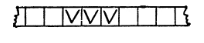

2.1 Запись чисел в машине Поста и постановка задачи о прибавлении единицы.
На машине Поста можно производить различные действия над числами. Для этого надо прежде всего договориться, как в машине Поста будут записываться числа. Речь будет всегда идти о целых неотрицательных числах 0, 1, 2, 3, 4, ... Рассмотрим конечную последовательность идущих подряд друг за другом отмеченных секций ленты, заключенную между двумя пустыми секциями. Такую последовательность отмеченных секций будем называть массивом, а число секций в ней - длиной массива. Так, на рис. 16 показан массив длины 3, а на рис. 17-три массива: длины 5, длины 1 и длины 2. Условимся теперь число п записывать на ленте посредством массива длины n + 1, а сам этот массив называть машинной записью числа n. На рис. 16 и 17 пока замы, следовательно, машинные записи чисел 2, 4, 0 и 1.

Рис. 16
Рис. 17
Зададимся целью осуществить на машине
Поста прибавление единицы. Понимать нашу задачу мы будем следующим образом: надо
составить программу, которая, будучи применена к ленте, на которой записано
произвольное число n, приводила бы к результативной остановке, причем после
остановки на ленте должно быть записано число n + 1 (имеется в виду составление
одной программы, годящейся для любого n).
В предыдущей фразе задача еще
поставлена не вполне точно, так как ни о начальном (т. е. задаваемой в начале),
ни о заключительном (т. е. возникающем после результативной остановки) состоянии
машины не сказано, ни где именно записано число, ни что еще записано на ленте;
не сказано также, где должна стоять каретка. Будем предполагать, что в начале и
в конце работы программы на ленте имеются только записи соответствующих чисел
(n в начале и n + 1 в конце),
расположенные в произвольном месте ленты, а в остальном лента пуста. В целях
облегчения нашей задачи не будем налагать никаких дополнительных ограничений на
заключительное состояние: нас, таким образом, устроит любая программа,
приводящая к ленте с записью числа n + 1, где бы эта запись ни находилась и где
бы ни стояла при этом каретка. В то же время мы будем делать все более и болев
широкие предположения относительно взаимного расположения каретки и машинной
записи числа в начальном состоянии машины. Таким образом, мы будем иметь дело не
с одной задачей, а с целой серией задач. Мы настоятельно рекомендуем читателю,
прежде чем читать решение какой-либо задачи, попытаться решить ее
самому.